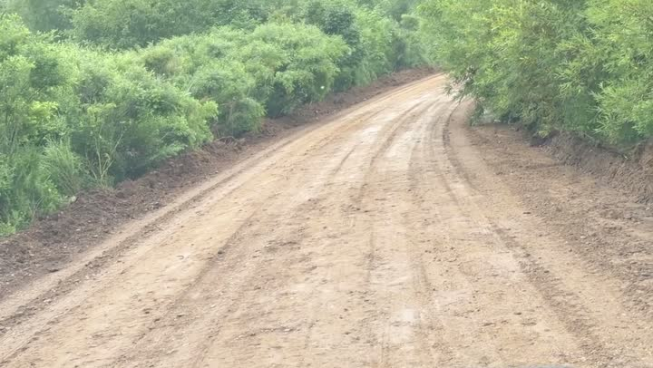
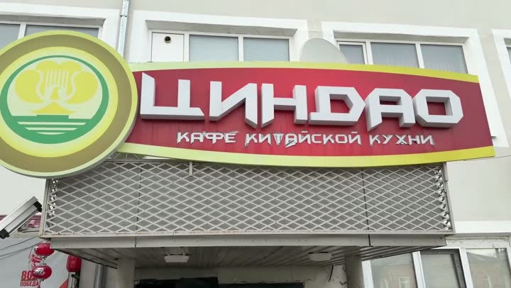
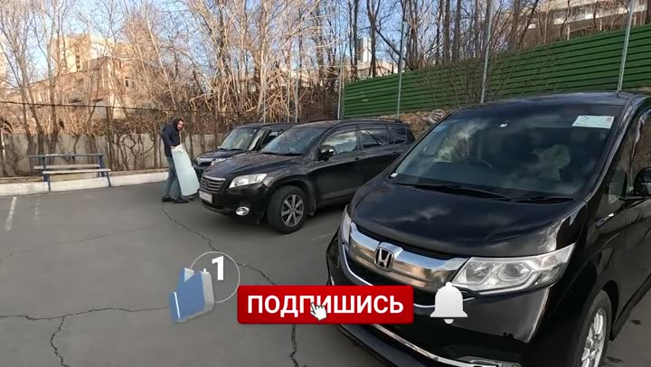
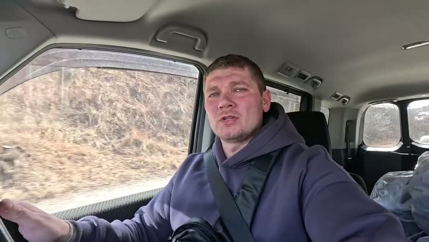

Атлас мест · Россия
Владивосток — наши места
17 мест6 роликов13 советуем
Наш топ-10

мыс Охлёстышесмотровая · 👍 Советуем Маяк Такаревскогосмотровая · 👍 СоветуемНовосильцевская батареясмотровая · 👍 Советуем · дёшево
Маяк Такаревскогосмотровая · 👍 СоветуемНовосильцевская батареясмотровая · 👍 Советуем · дёшево
Кафе "В своем Дао"кафе · 👍 СоветуемОстров Русскийостров · 👍 Советуем · дёшевоПролив Босфор Восточныйприрода · 👍 Советуем · дёшевоРусский мостсмотровая · 👍 Советуем · дёшево
Владивостокгорода и районы · 👍 СоветуемСтеклянный пляжпляж · 👍 СоветуемБатарея Поспеловскаясмотровая · 👍 Советуем · дёшевоГде поесть — 4
С детьми — 2
Красивые виды — 6
Бюджетно — 8
Новосильцевская батареясмотровая · 👍 Советуем · дёшевоОстров Русскийостров · 👍 Советуем · дёшевоПролив Босфор Восточныйприрода · 👍 Советуем · дёшевоРусский мостсмотровая · 👍 Советуем · дёшевоБатарея Поспеловскаясмотровая · 👍 Советуем · дёшевоДоша-кукафе · 👍 Советуем · дёшевоКафе «Эльдорадо»кафе · 👍 Советуем · дёшево
Пятёрочкасупермаркет · 🤔 На любителя · дёшевоЧастые вопросы — Владивосток
Где посмотреть красивые панорамы Владивостока?
Рекомендуем посетить мыс Охлёстыше, маяк Такаревского, русский мост, батарею Новосильцева и пролив Босфор Восточный.
Какие рынки стоит посетить во Владивостоке?
Посетите авторынок 'Зелёный угол' для покупки автомобиля и рыбный рынок Владивостока для приобретения свежайших морепродуктов.
Что интересного на острове Русский?
Остров Русский известен своими красивыми пейзажами, русским мостом и смотровыми площадками, такими как батарея Новосильцева и батарея Поспеловская.
Какое кафе во Владивостоке подойдёт для семейного отдыха?
Кафе 'В своём Дао' предлагает комфортную атмосферу и детскую зону, идеально подходящую для посещения всей семьёй.
Все места — 17
Рынки и магазины — 3
- Авторынок Зелёный Угол 🤔 На любителя
- Пятёрочка 🤔 На любителя
- Рыбный рынок Владивостока 👍 Советуем
Транспорт — 1
- Аэропорт Владивостока 🤔 На любителя
Достопримечательности — 6
- Батарея Поспеловская 👍 Советуем
- Владивосток 👍 Советуем
- Маяк Такаревского 👍 Советуем
- Новосильцевская батарея 👍 Советуем
- Русский мост 👍 Советуем
- мыс Охлёстыше 👍 Советуем
Еда — 4
- Доша-ку 👍 Советуем
- Кафе "В своем Дао" 👍 Советуем
- Кафе «Эльдорадо» 👍 Советуем
- Кафе Чифань 🤔 На любителя
Пляжи и острова — 2
- Остров Русский 👍 Советуем
- Стеклянный пляж 👍 Советуем
Природа — 1
- Пролив Босфор Восточный 👍 Советуем
Атлас мест канала «Юля и Дима / БЕЗ ТОРМОЗОВ». Описания составлены по нашим роликам; цены — на момент съёмки. Нашли неточность — напишите нам в Telegram.